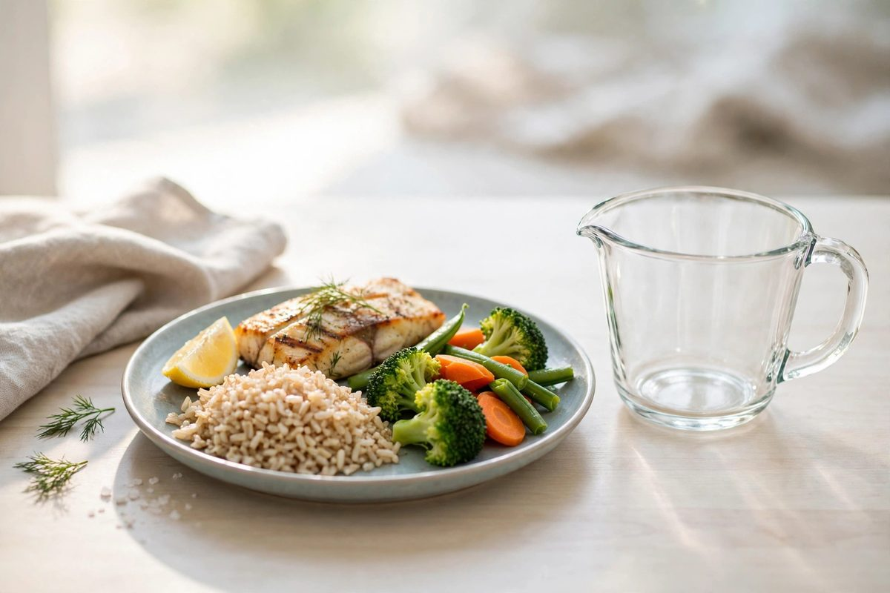
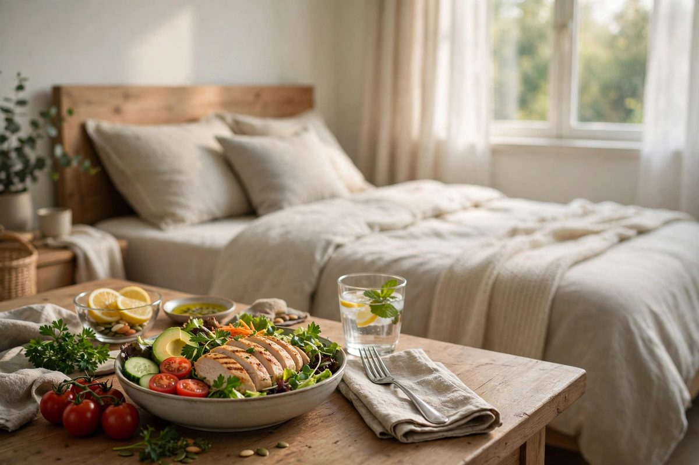
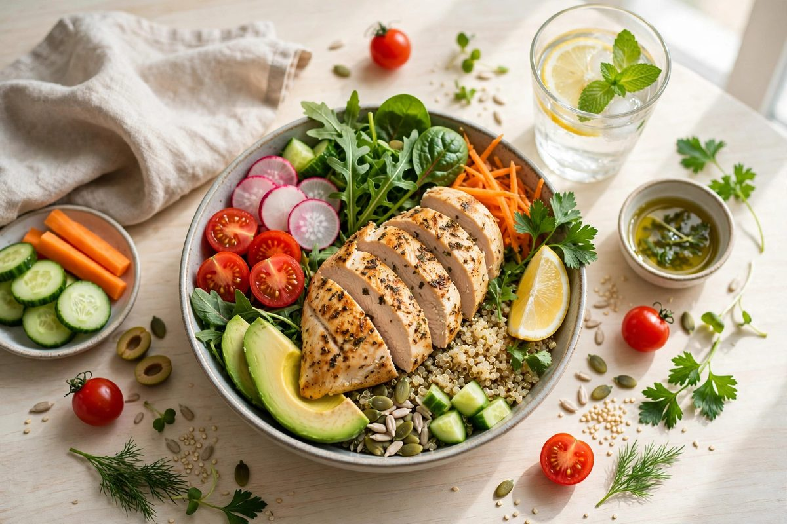
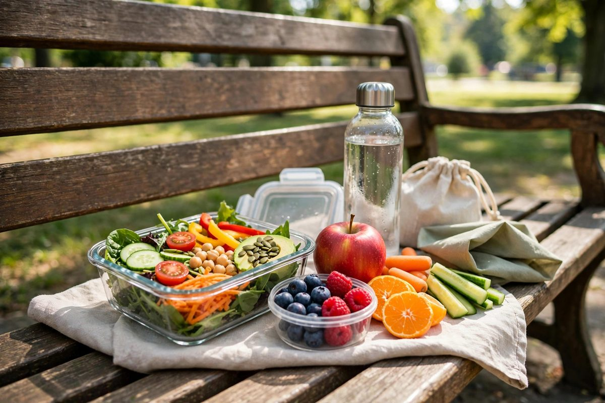
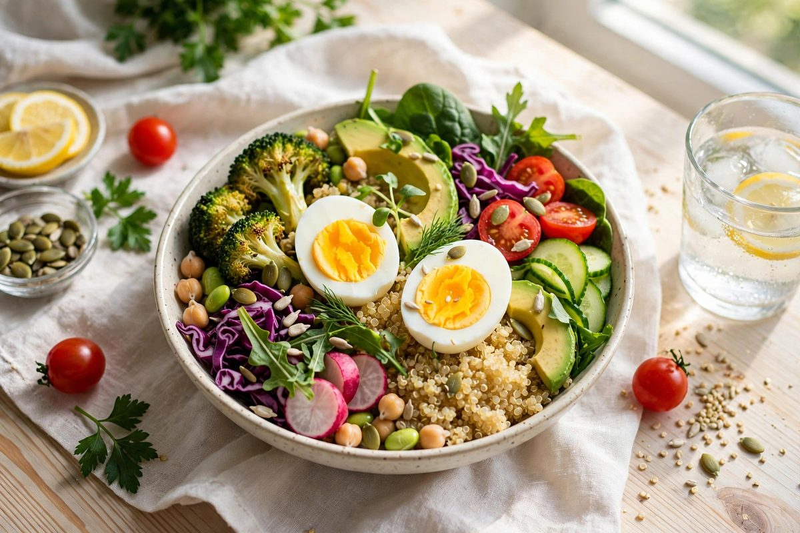
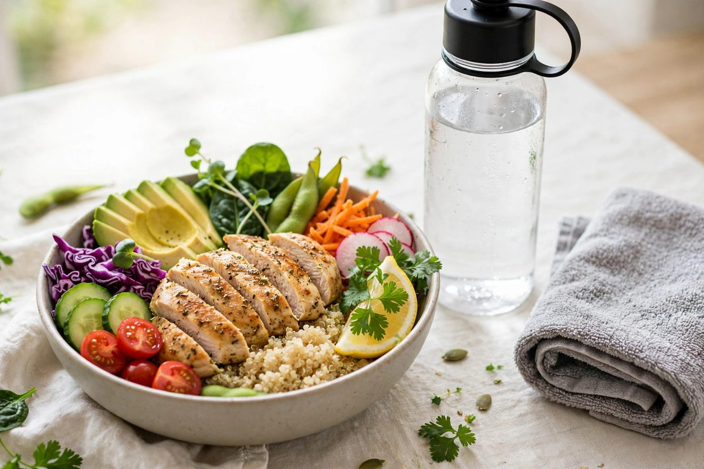
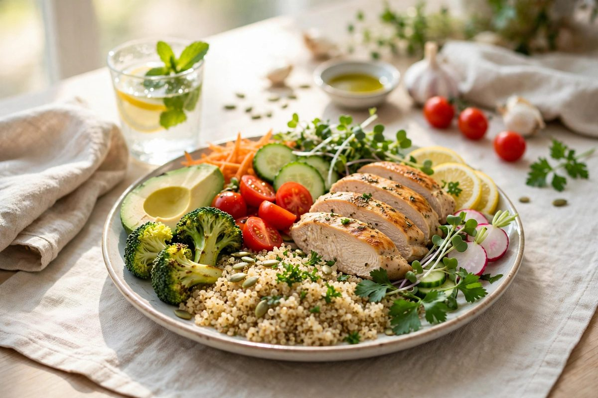
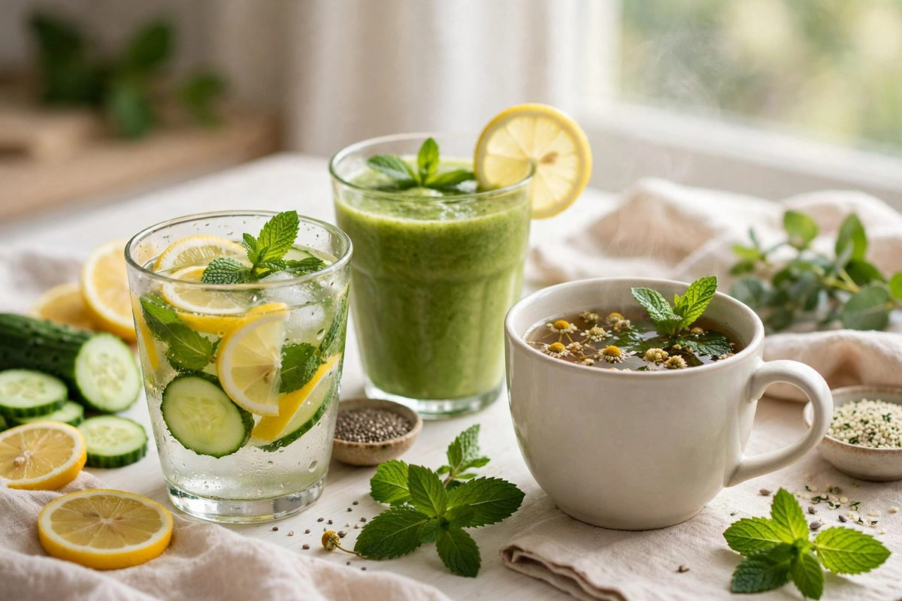
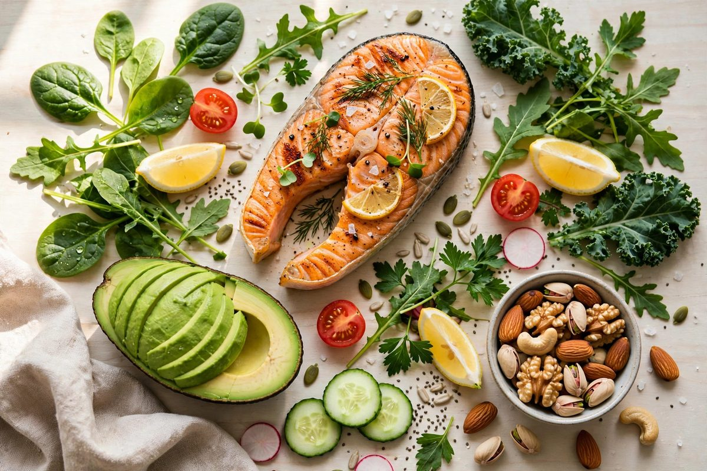

Steady, sustainable weight loss
Use the dashboard tools to find your calorie target, then read the guides to build habits that last. No fads, no extremes — just practical steps that work.
Your Tools
BMI Calculator
Body mass index is weight in kilograms divided by height in metres squared.
Your BMI will appear here.
Calorie Deficit Calculator
Estimates your maintenance calories (TDEE) with the Mifflin-St Jeor equation, then shows a deficit target.
Your calorie target will appear here.
Weight-Loss Timeline
See how long a goal may take at a safe rate of 0.5 to 1 kg per week.
Your timeline will appear here.
Macro Calculator
Splits your daily calories into protein, carbohydrate, and fat grams (30% protein, 40% carbs, 30% fat).
Your macros will appear here.
Daily Water Intake Calculator
A common guide is about 35 ml of water per kilogram of body weight per day. This is a rough guide, not a medical prescription; hot weather, exercise, and illness raise needs.
Your water guide will appear here.
Guides

Calorie Deficit Explained — How Weight Loss Actually Works
What a calorie deficit is, how to set one safely, and why steady deficits beat crash diets.

Portion Control — Eat Less Without Feeling Deprived
Practical portion-control methods: hand portions, plate division, and simple swaps that cut calories without hunger.
Exercise for Weight Loss — What Actually Helps
Walking, strength training, and cardio compared honestly, plus how to start without burning out.

Healthy Snacking — Snacks That Help Instead of Hurt
How to snack without breaking your calorie target: protein and fibre choices, portioned snacks, and better habits.

Sleep and Weight — Why Rest Matters More Than Willpower
How short sleep raises hunger hormones, increases cravings, and makes weight loss harder — and how to fix it.

Breaking a Plateau — What to Do When Weight Loss Stops
Why plateaus happen, how to tell a real plateau from normal fluctuation, and the safe steps that restart progress.

Walking for Weight Loss — The Simplest Exercise That Works
How to use walking for weight loss: step targets, pace, timing, and how to build the habit.

Strength Training for Weight Loss — Keep Muscle, Burn More
Why strength training matters during weight loss, and a simple beginner routine you can do at home.

HIIT Workouts for Weight Loss — Short, Intense, Effective
What HIIT is, how to do it safely, and whether it is right for your weight-loss plan.

Meal Timing for Weight Loss — Does When You Eat Matter?
What the evidence says about meal timing, breakfast, late eating, and intermittent fasting for weight loss.

Emotional Eating — Breaking the Stress-Eating Cycle
Why we eat when we are not hungry, how to tell hunger from emotion, and practical strategies that work.

Weight Loss for Beginners — Your First Four Weeks
A simple, realistic four-week starter plan for weight loss: food, movement, sleep, and tracking.
Tracking Progress — Beyond the Bathroom Scale
How to track weight loss properly: weighing, measurements, photos, and what the numbers mean.

Diet and Metabolism — What Really Affects Your Calorie Burn
How metabolism works, what speeds it up, what slows it down, and which claims are myths.

Healthy Drinks for Weight Loss — What to Drink and What to Skip
Drinks can add hundreds of hidden calories. Here is what to choose, what to limit, and how to stay hydrated.

Eating Out While Losing Weight — Enjoy Restaurants Without Undoing Progress
How to eat out and stay on plan: choosing restaurants, ordering smart, managing portions, and handling social pressure.

Weight Loss Myths — 10 Claims That Waste Your Time and Money
Common weight loss myths debunked with evidence: detoxes, fat-burning foods, carbs, and more.

Sustainable Weight Loss — Losing Weight and Keeping It Off
What research says about keeping weight off: habits, monitoring, support, and the long view.

Weight Loss and Hormones — How Hormones Affect Hunger and Weight
The hormones that control appetite, stress, sleep, and weight — and what you can actually do about them.

Maintaining Weight Loss — Life After the Diet
How to move from losing weight to keeping it off: calories, habits, monitoring, and enjoying food again.